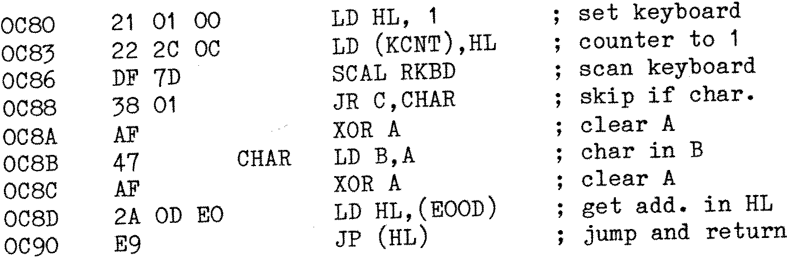

80-Bus News |
April–June 1982 · Volume 1 · Issue 2 |
| Page 8 of 55 |
|---|
Whilst on the subject of the Bits & P.C’s BASIC Programmers Toolkit, have you ever tried running the ROM version of it in RAM? It doesn’t like being rehoused. This is unless the firing pins are removed from a few bombs that have been placed. To defuse these place NOP’s in the following locations:
B020 and B021 B23E and B23F B247 and B248
Don’t forget to also alter the reset jumpt at B000 – 003 to the toolkits new location +3. Hope this is of help to someone.
Mel Warwick, Grantham, Lincs
If you have the cassette version of ZEAP 2.0 on your Nascom you can add the facility of a tabulator function when you use the Auto Input Mode. It is annoying to have to hit the space bar to move the cursor to the next field every time you do not have a label to type in. When adding the function below, typing “enter” causes the assembler to figure out where on the line the cursor is and moves it to the mnemonic field if the cursor position before was in the label field or to the next line if it was in the mnemonic field. If you type a “;” the cursor moves to the comment field and “;” is typed out, except when the cursor position before was in the label field. Then “;” is typed out at the first position in the label field.
Change these positions listed below and type in the following code. It is assumed that the modifications described in INMC News issue 7 have been made. The free space will begin at 2050H after a cold start. Address 2022H and 202AH contains the first position of the mnemonic field and 203FH the first position of the comment field counted from start of the line.

Mats Olofsson, Sweden
Just before Xmas ’81 I took delivery of a shiny, brand new 100% certified functional, never before used and carefully wrapped Gemini G805 single drive disk unit with D-DOS for my Nascom 1.
Of course, after specifying to my dealer that it was for use with a N-1 the unit was supplied with a plug (on the ribbon cable) to fit a Nascom 2 PIO. There now follows a warning to any naive person who is considering investing in a G805 and who
| Page 8 of 55 |
|---|